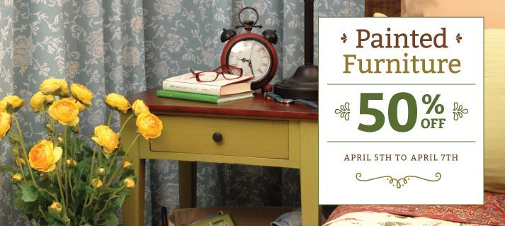
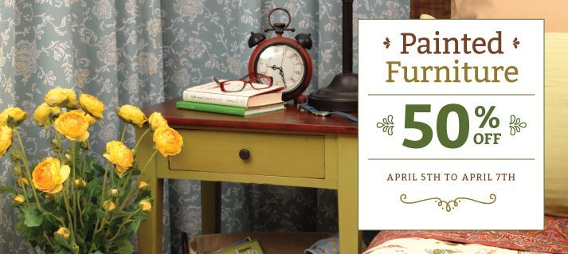

E-Commerce Website
While upgrading to Magento and WordPress, I redesigned their site, greatly improving its maintainability. Responsive design was important, as many of the site’s users browse on their iPads.
Quality Control
I developed a style guide for website copy and product naming guidelines. I also established a social media policy and hired a social media manager, an effort which saw a marked improvement in user engagement. I continue to oversee copywriting and illustrative work.
Developer Workflow
I implemented git for version control, set up development and production environments, and enforced best practises for a team of developers from different companies. I also helped set up the server that runs their production website, optimizing it for security and speed.
Newsletters
Using a series of custom-developed, responsive MailChimp templates, I send a variety of weekly newsletters to a growing list of subscribers—currently over 31,000.
Branding & Promotions
Over the years, I’ve helped grow the Wicker Emporium brand as they introduced it to new markets. I spearheaded shifting the brand focus—gradually—to a more modern look-and-feel.
This has meant the introduction of new fonts, patterns, and stylistic elements into an overall style library that is used for advertisements, posters, print and web ads, signage, tags, gift cards, invitations, and all manner of materials.
·See more·


 
